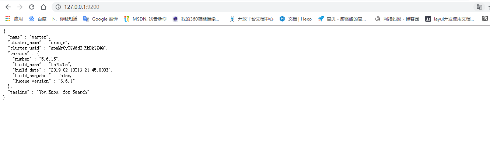

转眼来到了5月底，怀着激动的心情，终于可以分享一下关于ElasticStack的一些相关内容了，灰常灰常鸡冻~
在开始之前，我想先声明一下，这是笔记性质的分享，也就是我对ElasticStack的认识，也处在学习阶段，属于边学习，边总结，会把学习过程中需要注意的点，容易踩坑的点总结出来，并配合相关实例，来记录我对ElasticStack的学习过程。所以，如果你本身对ElasticSearch已经很熟悉了，那么这个系列的分享并不适合你，当然，欢迎你来指出博客中的错误，而如果你是刚刚接触ElasticStack，那么，非常欢迎交流沟通，希望可以共同进步！
还有，笔记类型的分享，我会尽可能写的详细，甚至有点啰嗦，因为我自己本身也很笨，回头忘了什么也能回来翻翻。
好了，今天是第一篇，开胃菜，先简单介绍下什么是ElasticStack吧。
首先，从字面上分析，Elastic是有弹性的意思，Stack是栈，合在一起就是“弹性栈”？？稍微延伸一下，可以理解成弹性技术栈。
那么提到技术栈，就不只是单一的技术，而是多种技术的综合掌握，就像高考时我们的考试科目叫理综，包含了物理化学生物，那么ElasticStack也包含了多种技术，具体的内容，可以到他们的官网https://www.elastic.co 去看，
可以看到，ElasticStack其实整合了很多技术内容，但我们一般情况下，或者说用的最多的是其中的四种，分别是，ElasticSearch,Kibana,Logstash,Beats。所以这里先约定一下，在本系列笔记中的ElasticStack，就只包含以上四种技术方案。
其实在早些时候，ElasticSearch刚刚流行的时候，我们常说ELK而不说ElasticStack，那时候一般只用到我刚提到的四种方案中的前三种，而那时候这三种技术的版本号也比较混乱，比如ElasticSearch出到，2.x版本的时候，Kibana已经出道4.x的版本了，所以后来，也是借着官方重新整合他们的技术方案，到这几年，将以上几种技术方案的版本号统一从5.x开始使用，也是在这是，Beats成为了ELK技术框架之外的又一名成员，所以现在也就不叫ELK了，就统一叫ElasticStack。
提到版本号，这里要重点说明一下，在学习ElasticStack的时候，尤其是初学者，一定要注意，你所使用的ElasticStack软件的版本号是一致的，官方在5.x以后的下载列表里也都是严格对应的，比如，有7.0.0的ElasticSearch，就有7.0.0的Kibana，同理有对应版本的Logstash和Beats，其中Beats是一个统一的叫法，Beats包含FileBeat,PacketBeat等，也都是有统一对应的版本号的，所以在下载安装的时候，一定要注意版本号统一！
对了，说了半天好像还没说为什么要学习ElasticStack呢，额…这点要说起来的话，内容就多了去了，那咱这博客就别说别的了，也就失去了分享知识的意义，所以，建议大家自己去查一下，那么我的一句话总结就是，如果你的系统用上了ElasticStack，就好比给TonyStack穿上了钢铁侠的外衣，不止是变酷，威力也会变大数倍。
接下来，我会分别介绍，ElasticSearch,Kibana,Logstash,和Beats中的FileBeat以及PacketBeat的安装配置，关键说明，以及简单的demo展示，来介绍一下ElasticStack的魅力，同时会穿插一些相关的概念介绍
在此之前，我还要再做一点说明，关于版本的选择，大家都知道，越是新的版本，功能越丰富，活力越大，但是，ElasticStack毕竟是老外的产品，相信多数开发人员和我一样，没有无障碍阅读并理解英文技术文档的英语能力，而中文社区也做不到很快的就同步最新的文档，即便是很快同步，相关的教程，资料也不会出来那么快，所以，如果你是一个对技术标准要求很苛刻的人，那么你可以选择最新的版本，但我还是建议大家，为了方便学习，方便查阅资料，尽量选择一个相对稳定，中文资料内容丰富，同时短期内不会落伍的版本。我这里选择的是5.6.15，也就是5.x系列里最新的版本。还有，在开始之前，建议大家先建立一个统一的文件夹，起名Elastic或者方便你识别的一个名字，将ElasticStack相关的文件都下载安装到该文件夹下。
ElasticSearch:ElasticSearch是整个ElasticStack的核心部分，对于它的介绍，会相对详细些
1.安装配置
1).首先，ElasticSearch是用java编写的，所以安装ElasticSearch的前提是要先安装java，这个我只说一点，就是选择JDK版本的时候，请选择Java8，因为我们用的5.x的版本，对应的java版本就是java8，选的版本过高的话，在运行的时候会报警，甚至会报错。
2).接下来，下载ElasticSearch，（本来打算要介绍一下ElasticSearch的，后来觉得，官网的介绍已经非常好了，而且图文并茂，我就不多费唇舌了，https://www.elastic.co/cn/products/elasticsearch）
这里是ES的下载界面，我们看到目前最新的版本是7.1.1，并不是我们的目标版本，在下载页面往下拉一点有一个“past releases”，我们可以找到以往的发行版本，点击之后，选择我们需要的ES版本
然后下载，注意我的使用环境目前是在Windows环境，大家请根据各自的系统环境，下载对应的版本即可。下载形式也有多种，一般分为，zip,tar,deb,rpm和msi，这里，我建议不管哪种系统环境，统一选择压缩包（zip或tar）的格式下载，这样配置起来更加灵活，我选择这里选择zip包。
3).将下载的包解压，目录结构如下
解压完后，不需要任何配置，直接打开命令行，进入到bin目录，执行elasticsearch就可以将运行起来
默认ES是运行在9200端口上的，我们可以通过浏览器来验证一下

出现这个界面，就说明我们已经运行起一个elasticsearch集群了。
2.关键说明
我们回到上面解压完成后的那一步，在解压后的目录里，有一个config文件夹，里面有三个文件，elasticsearch.yml,jvm.options,log4j2.properties，当前阶段，我们只关注第一个配置文件，编辑打开
在里面我们可以看到，默认的配置文件里都是注释掉的内容，因为es帮我们做好了默认配置，所以不修改任何内容也可以启动一个es集群。
我们来简单介绍一下配置文件里的内容
Cluster(集群)：这里我们可以配置集群的名字，注意，在一个es集群里，集群名字是唯一的；
Node(节点)：一个集群可以有多个节点，我们稍后在demo中会测试启动一个包含两个节点的es集群,节点名字(node.name)是不相同的，注意区分，node.master: true指定该节点是否有资格被选举成为node，默认是true，es是默认集群中的第一台机器为master，如果这台机挂了就会重新选举master，node.data: true指定该节点是否存储索引数据，默认为true；
Paths(路径)：这里有三个配置，一个是path.data，存储es数据，一个是path.log，存储es日志，path.plugins: /path/to/plugins，设置插件的存放路径，默认是es根目录下的plugins文件夹，一般不用调整；
Memory(内存)：这里可以配置es可占用的最大内存空间，这个视情况而定，一般不超过可用内存的一半就好，否则当检索逻辑很复杂时，可能会占用很高的内存，严重影响效率；
Network(工作网络)：这里有两个配置，network.host和network.port，一般内网环境下，network.host就设定为127.0.0.1，而es的默认端口为9200，如果我们需要通过外网访问es，可以将network.host设定为服务器的IP地址。
Discovery(可被发现)：这个配置是设置是集群节点可以被其他节点发现访问，否则当我们启动多个节点的时候，他们都是游离在集群之外的。
Gateway(网关)：主要职责是用来对数据进行长持久化，另外，整个集群重启之后可以通过gateway重新恢复数据。
关于配置文件更加详细的介绍，可以看看这里https://www.cnblogs.com/huane/p/6093818.html
3.Demo测试
接下来，我们通过简单的配置，启动包含两个节点的ES集群，一个主节点master，一个子节点slave1，
首先，为了方便，我们先将之前下载的ES压缩包重新解压一份，然后我先修改第一个节点下的配置文件，
1 | cluster.name: orange #集群名字 |
保存后，开始配置slave1的配置文件
1 | cluster.name: orange |
然后我们分别启动两个节点
然后我们打开浏览器，验证一下
这样我们就启动了一个包含两个节点的es集群。
这里推荐大家用chrome浏览器，安装一个叫做ElasticSearch Head的插件，可以看的更直观一些
关于ElasticSearch查询语法的一些内容，在后面的笔记在单独介绍，这篇就先讲安装。
Kibnan：能够对 Elasticsearch 中的数据进行可视化并在 ElasticStack 进行操作
1.安装配置
首先，打开https://www.elastic.co/cn/downloads/past-releases,选择5.6.15版本的Kibana
同样我们下载zip包的格式，然后解压缩，
依然是不需要任何配置，就可以直接运行Kibana
启动后，我们在浏览器输入localhost:5601
至此，我们就启动了Kibana服务的安装
2.关键配置
kibana的配置文件同样是在conf目录下，只有一个文件kibana.yml，
这个配置文件的内容还是比较容易读的，虽说是英文，但通俗易懂，我就不多说了
3.demo
在kibana里，我们可以做一些对于ES的交互操作，我这里只演示一下，下篇在细说
选择DevTools,我这里的ES里已经有一些数据了，比如我执行一个检索操作
右边的框是检索结果，结果展示是json格式的，多说一句，es是基于Lucene的搜索服务器，而Lucene繁琐复杂，es通过对其封装，对外开放了简单的restful风格的接口，使得我们不用再去理解繁琐的Lucene语法，也能享受优质的检索服务。
这里我还要提一下，大家注意看到右面的检索结果里有个“max_score”的参数，这个是匹配度的意思，详细内容，我们在后面的笔记在细说，这里我先提一句，这个参数很重要，当我们检索某个关键词时，他会把相关的内容都检索除了，然后每个记录后都跟着一个“_score”来表明结果与查询内容的匹配度，同时给出最大匹配度的结果，这时我们就可以根据我们的业务逻辑来实现一些相关操作了，同时，一定程度上，省去了分词和语义分析（只是一定程度上，如果你的检索系统对自然语言标准有要求，那es提供的相关的结果是不够的），提高工作效率。
logstash:官方对logstash的介绍是，Logstash 是开源的服务器端数据处理管道，能够同时从多个来源采集数据，转换数据，然后将数据发送到您最喜欢的 “存储库” 中，这篇关于logstash我先简单介绍，因为我当前对这块知识掌握的也不是很多，下一篇在详细说；
1.安装配置
同样，打开https://www.elastic.co/cn/downloads/past-releases，选择5.6.15版本的logstash
安装完后，解压
然后我们启动
这里后面跟着的参数，我这篇先不讲，等后面的笔记在详细介绍。
好了，今天先写到这，还有beats的相关内容没说，后面继续。
不写不知道，一写吓一跳，ElasticStack相关的内容是真挺多的，需要注意的点也很多，写着写着也感觉身体被掏空，怕写错还是会去查一些资料，然后自己实际操作一遍来验证，这篇就当是个开胃菜，大家简单认识一下ElasthcStack，后面我会针对性的对每块内容详细分享，然后在结合程序代码，实际演示一下怎么将ElastiStack和我们的系统结合起来，发挥作用。嗯，这么一梳理，感觉关于这块还要至少写5，6篇才能完，但既然开了这个头，我就会尽全力写好这个系列，分享的同时，自己也会得到知识的提升和巩固，而且我一直认为，我们这些不再一线城市，或者不再大企业的技术人员，也要努力拓展更新自己的技术路线，才能保证不被时代淘汰，才能写出更好的代码，做出更完美的产品。加油加油！！